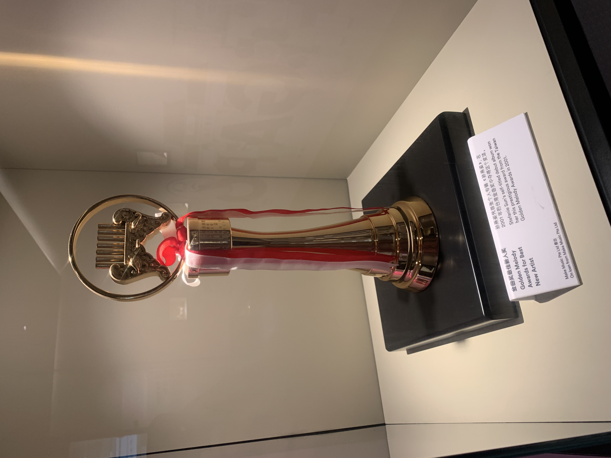

STEFANIE SUN · 音乐故事馆
「每一个音符背后，都藏着一段故事」
STEFANIE SUN
孙燕姿（Stefanie Sun，1978年7月23日—），新加坡籍华语流行乐女歌手、词曲创作人。2000年以同名专辑《孙燕姿》在台湾出道，凭借独特的嗓音和扎实的唱功迅速走红，成为华语乐坛"四小天后"之一。
她的音乐风格多元，从抒情慢歌到轻快摇滚、世界音乐元素均有涉猎。孙燕姿的歌声有着"既温暖又带着淡淡的忧伤"的特质，尤其擅长演绎情感层次丰富的作品。出道25年来，她发行了13张原创专辑，销量超过3000万张，被誉为华语乐坛的"宝藏女声"。
即便多次暂别乐坛，每一次回归都能引发巨大关注。她的歌曲陪伴了一代人的青春，成为无数人心中不可替代的音乐记忆。
「唱歌是我与世界沟通的方式，每一首歌都是一个故事。」—— 孙燕姿
25年音乐旅程
点击卡片展开完整故事
PHOTO GALLERY